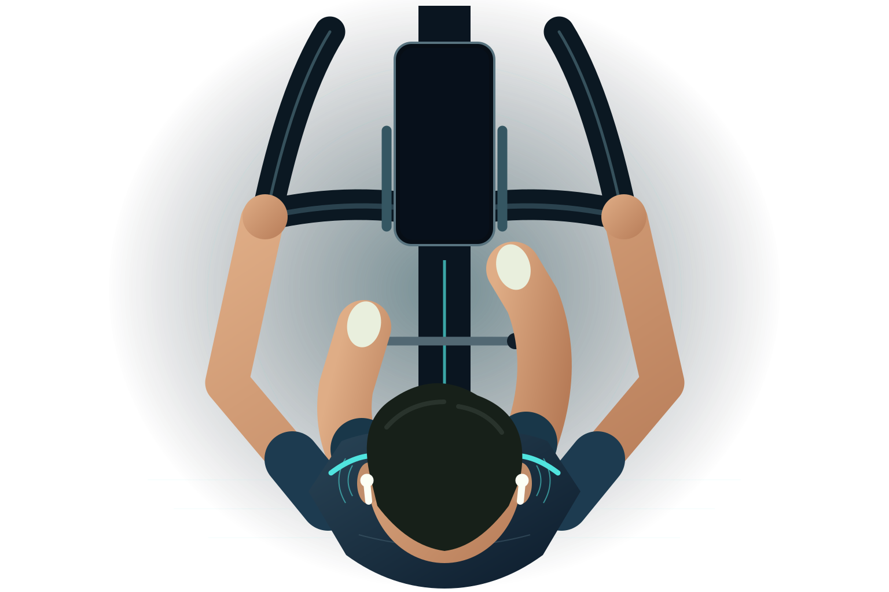
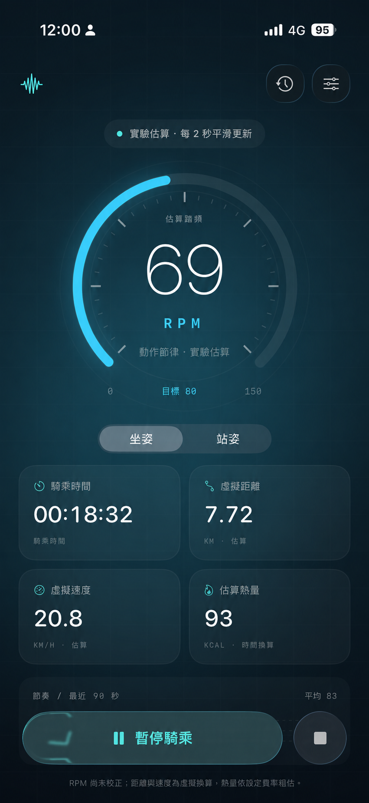
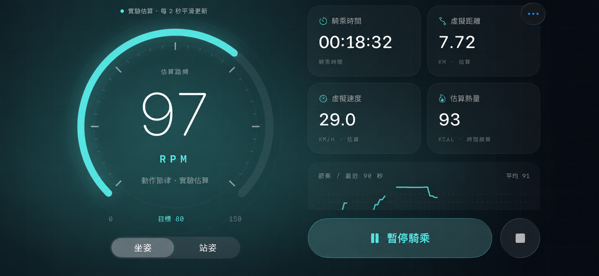
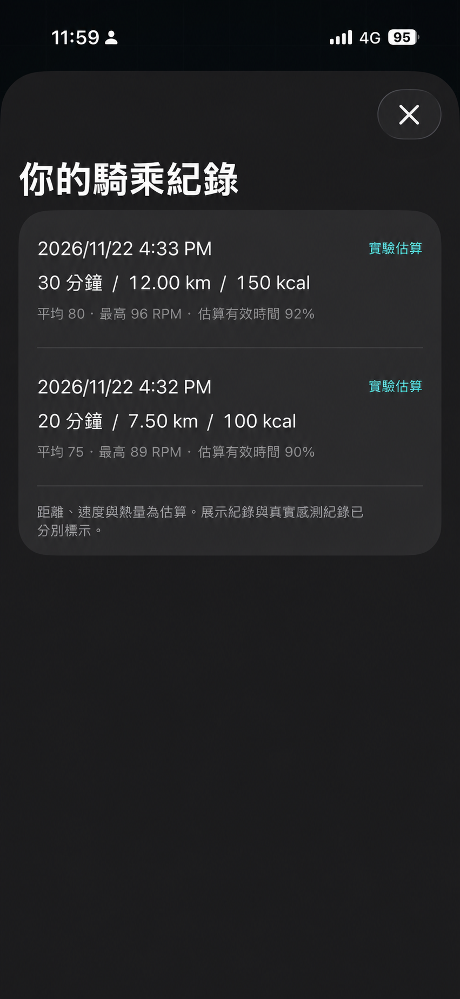

耳機，照平常戴。
連接 AirPods，再開啟 AirPods RPM。
正常坐姿，不用刻意擺頭。
你的 AirPods，讓手機變成飛輪儀表板。
LESS SETUP. MORE RIDING.
戴上 AirPods，開啟 AirPods RPM。
一邊聽喜歡的音樂，一邊看見踩踏節奏。
連接 AirPods，再開啟 AirPods RPM。
把 iPhone 固定在車前，抬眼就能查看數據。
開始騎乘，依踩踏方式切換坐姿或站姿。
RPM 依 AirPods 動作估算，非車上感測器的直接讀值。
即時騎乘數據
五項騎乘數據，抬眼就能看見。



看見每分鐘的踩踏節奏
依 AirPods 動作估算累計這一趟的運動時間
把踩踏節奏換成速度感
每一轉，累積這一趟的里程
依騎乘時間與設定費率換算
你的騎乘儀表板
直式、橫式，跟著你的擺放方式。

你的騎乘紀錄
保存每一趟騎乘，隨時回顧自己的表現。

紀錄保存在你的手機，沒有帳號也能開始。
MAKE IT YOUR DAILY RIDE
打開 AirPods RPM，讓踩踏節奏有跡可循。
App Store 版本準備中WE’RE HERE FOR YOUR RIDE